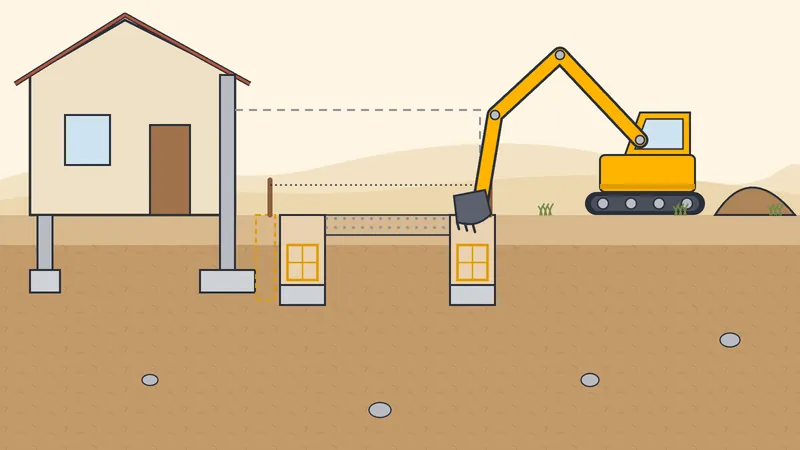

Terrassement d'une extension de maison : étapes, fondations et prix 2027

Agrandir une maison de 20 à 40 m², c'est un petit terrassement avec une contrainte qu'une construction neuve n'a pas : la maison est déjà là. Il faut faire entrer une machine par le jardin, creuser contre une fondation qui porte des murs habités et rejoindre des réseaux existants. Dans les Bouches-du-Rhône, largement exposées au retrait-gonflement des argiles, la jonction entre l'ancien et le neuf est aussi là où les fissures apparaissent en premier. Ce guide suit le chantier dans l'ordre et chiffre une extension de 30 m² ligne par ligne.
Ce qui distingue le terrassement d'une extension
Une extension, une véranda ou un garage accolé se terrasse comme une petite maison. Ce qui coûte, c'est le voisinage de la maison existante :
- l'accès, souvent un simple portillon, sans place pour stocker la terre ;
- la fondation existante, que la fouille longe et peut déchausser ;
- les niveaux, calés sur le seuil existant ;
- les réseaux qui sortent de la façade, souvent sous l'emprise du projet.
Avant de creuser : autorisation et étude de sol
Déclaration préalable ou permis de construire
Règles générales du code de l'urbanisme, appliquées à la plus grande des deux surfaces créées, surface de plancher ou emprise au sol (un garage accolé crée de l'emprise au sol) :
- Jusqu'à 20 m² : déclaration préalable de travaux.
- Jusqu'à 40 m² en zone urbaine (zone U) d'un plan local d'urbanisme : déclaration préalable, sauf si la maison dépasse alors 150 m² au total, ce qui impose un permis.
- Au-delà de ces seuils : permis de construire.
- Quand un permis est nécessaire et que la maison dépasse 150 m² de surface de plancher, extension comprise : recours à un architecte obligatoire.
Une véranda suit les mêmes seuils. L'instruction prend un mois pour une déclaration préalable, deux pour un permis de maison individuelle, davantage en secteur protégé. Le PLU peut aussi limiter l'emprise ou imposer des reculs : consultez le service urbanisme de votre mairie avant de faire dessiner le projet.
L'étude de sol G2 sur terrain argileux
Dans les zones d'exposition moyenne ou forte au retrait-gonflement des argiles, consultables sur Géorisques, la loi ELAN impose depuis le 1er octobre 2020 une étude préalable (G1) à la vente d'un terrain constructible. Pour un contrat de construction ou de maîtrise d'œuvre portant sur une maison, elle oblige le constructeur à suivre une étude de conception (G2) ou à appliquer des dispositions constructives fixées par la réglementation. Pour une extension, ce qui s'impose dépend des travaux et du contrat : posez la question par écrit à votre constructeur ou maître d'œuvre.
Obligatoire ou non, la G2 (1 200 à 2 500 € en mission AVP, 1 800 à 3 500 € avec la phase PRO) est la dépense la plus rentable d'une extension sur argile : elle fixe la profondeur des semelles, tranche entre dalle et vide sanitaire et dit comment traiter la jonction. Demandez aussi un sondage au pied du mur existant. Voir nos guides de l'étude de sol G1 et G2 et des fondations sur sol argileux.
Accès, implantation et protection de la maison
On mesure d'abord le passage le plus étroit. Une micro-pelle de 70 cm à 1 m de large passe presque partout ; une mini-pelle de 3 t demande 1,50 à 1,70 m. Un accès difficile majore le devis de 10 à 25 % ; sans accès, le terrassement manuel coûte trois à cinq fois plus cher (80 à 150 €/m³). Si la goulotte de la toupie n'atteint pas les fouilles, il faut une pompe à béton.
L'implantation se cale sur le niveau du plancher existant. Avant la première fouille :
- photographiez, avec la date, les fissures existantes ;
- repérez évacuations, câbles et gaz ; l'entreprise fait les déclarations DT-DICT ;
- faites déplacer tout regard situé sous l'emprise ;
- bannissez le gros brise-roche au contact du mur : ses vibrations fissurent l'existant ;
- protégez pelouse et allées par des plaques de roulage.
Les fouilles le long du mur existant
Ne pas déchausser l'ancienne fondation
Une semelle s'appuie sur un volume de terre qui s'évase sous elle. Creuser plus profond juste à côté lui retire cet appui : elle tasse ou glisse vers la fouille, et le mur fissure. Trois règles en découlent.
- Reconnaître avant de creuser. Un sondage au pied du mur montre la profondeur et l'état de l'ancienne semelle, parfois de simples moellons posés à 50 cm.
- Respecter la pente. La ligne qui joint le bord de l'ancienne semelle à celui de la nouvelle ne doit pas être plus raide que 2 de haut pour 3 de long ; sinon, on écarte la nouvelle semelle ou on la descend en redans.
- Avancer par plots. Sous le niveau de l'ancienne semelle, on terrasse par plots alternés d'un mètre à un mètre et demi, bétonnés avant d'ouvrir les suivants.
Dans l'argile, une fouille se bétonne dans la foulée : sous la pluie, elle se dégrade en quelques jours. Au-delà de 1,30 m, une tranchée étroite à parois verticales doit être blindée ou talutée. Enfin, l'extension garde sa propre fondation, séparée de l'ancienne par un joint de rupture : les deux ouvrages ne tasseront pas de la même façon. Voir aussi notre guide des prix des fondations de maison.
Quand faut-il reprendre la maison en sous-œuvre ?
Quand la maison est fondée trop haut pour son sol et que l'étude demande de fonder l'extension bien plus bas. Soit on porte l'extension, côté maison, sur des micropieux (1 000 à 2 000 € par micropieu de 6 à 12 m, plus 1 500 à 3 000 € d'amenée et de repli de la foreuse), forés sans décomprimer le sol sous l'ancienne semelle ; soit on reprend l'ancienne semelle en sous-œuvre sur la longueur de la jonction, pour 1 500 à 5 000 € par mètre linéaire. C'est la G2 qui tranche. Une maison déjà fissurée mérite un diagnostic avant qu'on lui accole quoi que ce soit.
Un projet d'extension à terrasser ?
STP Terrassement réalise les fouilles, les fondations et les raccordements de votre extension, dans le pays d'Aix, à Gardanne et jusqu'à Marseille.
Pressé ? 07 45 14 20 49 ou WhatsApp
Dalle sur terre-plein ou vide sanitaire ?
L'extension suit en général la maison : vide sanitaire si elle en a un, au même niveau, en reportant les grilles de ventilation que l'extension recouvre ; dalle si elle est sur dalle. Sur argile, la G2 oriente souvent vers un vide sanitaire, quitte à décaisser l'emprise pour rester au niveau. Il coûte 90 à 150 €/m² contre 50 à 90 €/m² pour une dalle sur terre-plein, soit 1 200 à 1 800 € de plus pour 30 m². Voir notre comparatif vide sanitaire ou dalle et le prix d'une dalle béton au m².
- Garage accolé : dalle ferraillée d'au moins 12 cm, quelques centimètres sous le seuil de la porte, à 70 à 110 €/m² ; voir le terrassement d'un garage.
- Véranda : même légère, elle doit reposer sur une fondation hors gel sous ses montants. Une terrasse existante ne convient que si un sondage montre qu'elle a été fondée pour cela.
Évacuation des déblais et raccordements
Les fouilles d'une extension de 30 m² sortent environ 9 m³ de terre, une douzaine une fois foisonnée. Leur évacuation coûte 25 à 35 €/m³ vers une décharge à moins de 10 km si un camion peut charger sur place, ou 250 à 400 € par benne de 8 m³ posée devant la maison, à ne remplir qu'en partie avec de la terre (8 m³ de terre pèsent environ 12 t) sous peine de supplément de poids. La terre végétale reste au jardin ; l'argile ne sert pas de remblai contre les fondations, on lui préfère un tout-venant 0/80 (20 à 40 €/m³). Si l'extension remplace une terrasse en béton, la démolition s'ajoute : 25 à 40 €/m² non armée, 50 à 80 €/m² armée.
Les eaux usées (EU) rejoignent le réseau de la maison par gravité, avec un regard à chaque jonction ; si le rejet arrive sous le collecteur, il faut une pompe de relevage. Les eaux pluviales (EP) de la nouvelle toiture restent séparées et vont au réseau pluvial ou à l'infiltration selon le PLU, jamais au pied des murs. Les tranchées coûtent 25 à 35 €/ml à 0,80 m en terre ordinaire, plus quelques centaines d'euros de tuyaux et de regards (prix indicatif). En assainissement individuel, le SPANC valide le projet : l'installation est dimensionnée selon le nombre de pièces principales.
Exemple chiffré : une extension de 30 m²
Hypothèses : extension de plain-pied de 6 × 5 m avec salle d'eau, accolée par son grand côté ; portillon de 1,20 m ; sol stable ; semelles à 0,80 m sur les quatre côtés, dont une neuve le long de la maison, soit 22 ml ; dalle sur terre-plein ; décharge à moins de 10 km. Prix unitaires hors taxes, tirés de notre grille de tarifs et de nos guides.
| Poste | Calcul | Montant HT |
|---|---|---|
| Décapage de la terre végétale | 40 m² × 3 à 6 €/m² | 120 à 240 € |
| Fouilles en rigole | 22 ml × 30 à 60 €/ml | 660 à 1 320 € |
| Béton de propreté | 22 ml × 10 à 15 €/ml | 220 à 330 € |
| Armatures des semelles | 22 ml × 15 à 30 €/ml | 330 à 660 € |
| Béton armé des semelles | 22 ml × 40 à 80 €/ml | 880 à 1 760 € |
| Soubassement jusqu'au niveau du seuil | 22 ml × 80 à 150 €/ml | 1 760 à 3 300 € |
| Dalle sur terre-plein (hérisson, polyane, dalle armée) | 30 m² × 50 à 90 €/m² | 1 500 à 2 700 € |
| Évacuation des déblais | 12 m³ foisonnés × 25 à 35 €/m³ | 300 à 420 € |
| Tranchées EU et EP jusqu'aux réseaux existants | 15 ml × 25 à 35 €/ml | 375 à 525 € |
| Total | Somme des lignes | 6 145 à 11 255 € |
Soit environ 6 100 à 11 300 € HT sous le plancher. Sur un si petit chantier, les frais fixes pèsent : visez plutôt la moitié haute des fourchettes, et 10 à 25 % de plus si l'accès est difficile. Non compris : murs et toiture, isolation du plancher, tuyaux et regards, étude de sol, reprise en sous-œuvre éventuelle.
Le même projet sur argile
Si la G2 demande des semelles descendues vers 1,20 à 1,50 m et un vide sanitaire :
- étude de sol G2 AVP + PRO : 1 800 à 3 500 € ;
- semelles approfondies : 10 à 20 % de plus sur les 3 850 à 7 370 € de fondations, soit 385 à 1 474 € ;
- vide sanitaire au lieu de la dalle : 30 m² × 40 à 60 €/m², soit 1 200 à 1 800 €.
Le total passe à environ 9 500 à 18 000 € HT (6 145 + 1 800 + 385 + 1 200 en bas de fourchette, 11 255 + 3 500 + 1 474 + 1 800 en haut). Pour un prix sur votre terrain, demandez votre devis : la visite est gratuite.
Combien de temps dure le chantier ?
En amont : trois à quatre semaines pour un rapport G2, un à deux mois d'instruction, puis les deux mois du délai de recours des tiers après l'affichage de l'autorisation, qu'il est prudent d'attendre. Sur place : une journée d'implantation et de décapage, un à deux jours de fouilles, un à deux jours pour ferrailler et couler, une semaine de séchage, une semaine pour le soubassement et le plancher bas, une journée de tranchées et de remblai. Soit deux à trois semaines jusqu'au plancher bas, hors intempéries.
Ce que fait STP Terrassement sur une extension
Nous réalisons l'implantation, le sondage de la fondation existante, les fouilles, les semelles, l'évacuation et les tranchées EU et EP, avec l'engin adapté à votre accès ; les micropieux, quand il en faut, sont confiés à une entreprise de fondations spéciales. Avec plus de 15 ans d'expérience de l'équipe, nous intervenons dans le pays d'Aix, à Gardanne, Bouc-Bel-Air et jusqu'à Marseille. Voir nos pages terrassement et fondations de maison.
Questions fréquentes
Quel est le prix du terrassement pour une extension de maison ?
Pour 30 m² de plain-pied sur sol stable, environ 6 100 à 11 300 € HT pour le terrassement, les fondations et une dalle sur terre-plein, évacuation et tranchées comprises. Sur argile, avec étude G2, semelles approfondies et vide sanitaire, environ 9 500 à 18 000 € HT.
Faut-il un permis de construire pour une extension de 30 m² ?
En zone urbaine d'une commune dotée d'un PLU, une déclaration préalable suffit jusqu'à 40 m², sauf si la maison dépasse alors 150 m² : permis et architecte deviennent obligatoires. Hors zone urbaine, le permis s'impose au-delà de 20 m². Votre mairie confirme la règle applicable.
L'étude de sol G2 est-elle obligatoire pour une extension ?
En zone argileuse exposée, la loi ELAN encadre l'étude de sol à la vente d'un terrain constructible et pour les contrats de construction ou de maîtrise d'œuvre ; pour une extension, cela dépend des travaux et du contrat. Obligatoire ou non, une G2 AVP à 1 200 à 2 500 € (1 800 à 3 500 € avec la phase PRO) protège la jonction des fissures.
Peut-on creuser les fondations contre le mur de la maison ?
Oui, à condition de ne pas descendre sous l'ancienne semelle sans précaution : sondage préalable, pente de 2 de haut pour 3 de long entre les deux bases, et plots alternés ou reprise en sous-œuvre si la nouvelle semelle doit être plus profonde.
Dalle ou vide sanitaire pour une extension ?
L'extension suit en général la maison, au même niveau de plancher. Sur argile, le vide sanitaire est préférable : 90 à 150 €/m² contre 50 à 90 €/m² pour une dalle sur terre-plein, soit 1 200 à 1 800 € de plus pour 30 m².
Une véranda a-t-elle besoin de fondations ?
Oui. Même légère, elle doit reposer sur une fondation hors gel sous ses montants, le plus souvent une semelle périphérique. Une terrasse existante ne convient que si un sondage montre qu'elle est correctement fondée.